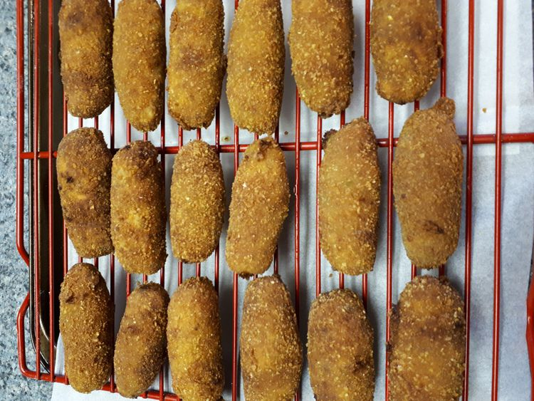

Home
Dutch Croquetten

🧆 Description
A beloved Dutch snack featuring flavorful seasoned ground veal (or beef/chicken), combined with a creamy ragout, shaped into oblong logs, breaded, and deep-fried until golden and crispy. These croquetten have a soft, savory center and are perfect as appetizers, pub snacks, or party treats. Typically served hot, often with mustard on the side.
Ingredients
- 1 lb lean ground veal (substitute lean beef or chicken if preferred)
- 2 Tbsp butter
- 4 Tbsp all-purpose flour
- ½ cup milk
- ½ cup chicken broth
- ½ tsp paprika
- ½ tsp chili powder (optional)
- 1 tsp curry powder (optional)
- ½ tsp salt
- ¼ tsp black pepper
- 1 tsp Worcestershire sauce
- 1 tsp finely chopped fresh parsley
- 8 oz spiced Gouda cheese, cut into strips (optional)
- 1 egg
- ½ cup all-purpose flour (for coating)
- 2 Tbsp water (for egg wash)
- 1½ cups seasoned dry breadcrumbs
- 1 cup oil for frying
Steps
- In a skillet over medium heat, cook the ground veal until evenly browned and fully crumbled. Set aside.
- In a saucepan on low heat, melt the butter and stir in 4 Tbsp flour until smooth. Cook about 2 minutes. Slowly whisk in milk, then chicken broth to form a thick sauce. Add the cooked meat and season with paprika, chili powder, curry powder (if using), salt, pepper, Worcestershire sauce, and parsley. Stir well, then remove from heat and allow to cool to room temperature.
- Once the meat mixture is cool and slightly firms, shape into cylinder logs about 3-4 in long and 1½ in wide. Optional: press a strip of spiced Gouda inside each log, ensuring it's fully encased.
- In a small bowl, whisk the egg and water. Lay breadcrumbs in a tray. For each croquette: roll first in flour, then dip in egg wash, then roll in breadcrumbs. Repeat for a thicker coating if desired.
- Heat oil in a skillet over medium-high heat (or use a deep fryer). Fry croquetten until golden brown and crispy on all sides. Drain on paper towels. Serve hot, ideally with mustard.